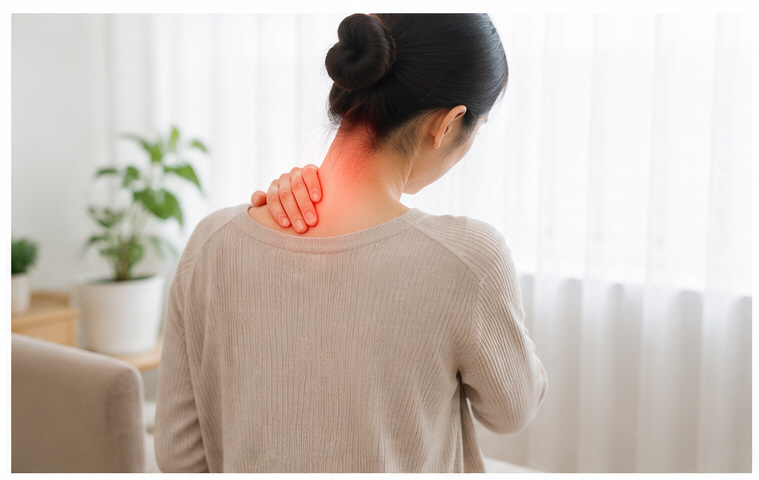
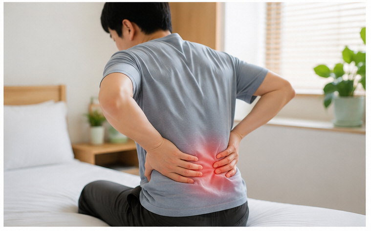
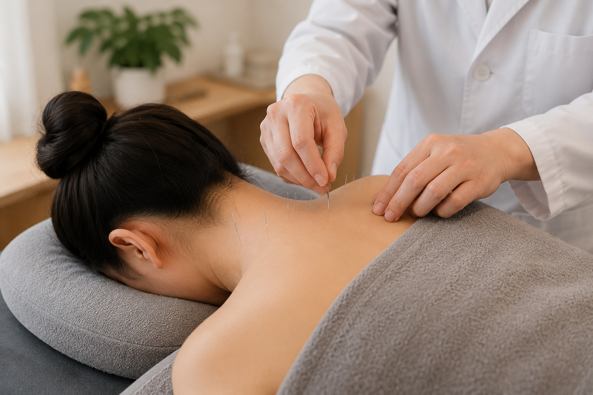
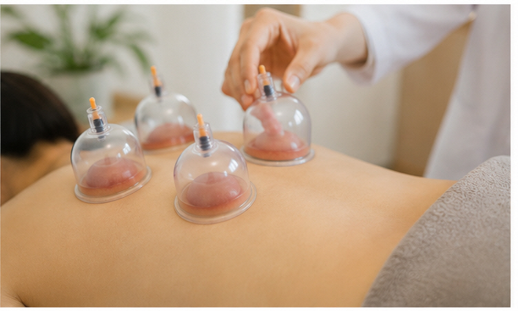

아픈 부위뿐 아니라
통증의 과정과 경과를
함께 살펴봅니다.
목·어깨·허리 통증부터 두통·어지럼, 발목·손목 등 각종 염좌와 오래 지속되는 근골격계 불편까지 현재의 상태를 함께 살펴봅니다.

이런 통증을 살펴봅니다
목 · 어깨 통증
뒷목의 뻣뻣함, 어깨 결림, 움직임에 따른 불편 등을 살펴봅니다.
허리 통증
갑자기 시작된 요통부터 오래 지속되는 허리의 불편, 움직임이나 자세에 따른 증상을 살펴봅니다.
디스크 · 협착 관련 불편
허리나 목의 통증과 함께 나타나는 팔·다리의 저림이나 불편 등 현재 증상을 확인합니다.
발목 · 손목 등 각종 염좌
발목, 손목, 목, 허리, 어깨 등 삐거나 다친 뒤 나타나는 통증과 움직임의 불편을 살펴봅니다.
두통 · 어지럼
두통의 양상과 함께 뒷목·어깨의 긴장이나 통증 등 동반되는 불편도 확인합니다.
오래 지속되는 통증
반복되거나 장기간 지속되는 통증은 기간과 생활습관, 악화·완화 요인을 함께 살펴봅니다.

통증이 언제, 어떻게 나타나는지 함께 봅니다
같은 허리 통증이라고 해도 갑자기 시작된 통증과 오랫동안 반복된 통증은 경과가 서로 다를 수 있습니다.
언제부터 아팠는지, 어떤 움직임이나 자세에서 심해지는지, 다리 쪽의 저림이나 불편은 없는지, 평소 생활과 일상에 어느 정도 영향을 주는지 등을 진료 시 함께 확인합니다.
두통이 있는데 왜 목과 어깨도 함께 살펴보나요?
두통을 호소하는 분들 중에는 뒷목이나 어깨의 뻣뻣함과 통증을 함께 느끼는 경우가 있습니다.
따라서 두통이 어느 부위에 나타나는지, 언제 심해지는지뿐 아니라 목·어깨의 긴장과 통증, 움직임에 따른 변화를 함께 살펴볼 수 있습니다.
다만 두통의 원인은 다양하기 때문에 모든 두통을 목이나 어깨의 문제만으로 설명하지 않습니다. 증상의 양상과 함께 나타나는 다른 증상을 함께 확인합니다.
상태에 따라 진료 방법을 선택합니다
모든 진료 방법을 모든 환자에게 동일하게 적용하지 않습니다.
구체적인 진료방법과 횟수는 증상의 종류, 지속기간 및 현재 상태에 따라 달라질 수 있습니다.
침 · 약침 치료
침 치료는 통증 및 근골격계 증상에 활용되는 한의진료 방법 중 하나입니다.
약침 역시 통증 부위와 현재 상태에 따라 침 치료 등 다른 진료 방법과 함께 고려할 수 있습니다.
솔솔한의원에서는 일회용 침을 사용하며, 구체적인 적용 여부와 진료 방법은 현재 상태를 확인한 뒤 결정합니다.

통증은 경과의 변화를 함께 살펴봅니다.
다친 뒤 갑자기 발생한 통증은 초기 며칠 동안 증상이 달라지는 경우가 있습니다.
반면 오랫동안 반복되거나 지속되는 통증은 한 시점의 증상만으로 판단하기보다 일정 기간 동안 증상이 어떻게 변하는지를 살펴볼 필요가 있습니다.
진료 기간과 간격은 증상의 종류와 지속기간, 개인의 생활환경 및 현재 상태에 따라 달라질 수 있습니다.

습부항 후에는 시술 부위를 청결하게 관리해주세요
습부항은 피부에 미세한 자극을 준 뒤 부항을 적용하는 한의진료 방법 중 하나입니다. 현재 상태에 따라 적용 여부를 결정하며 모든 통증에 일률적으로 시행하는 것은 아닙니다.
시술 후에는 해당 부위를 청결하게 관리하고, 피부 상태에 따라 시술 부위에 일시적인 자국이나 불편감이 남을 수 있습니다.
구체적인 목욕이나 운동 등의 주의사항은 시술 부위와 피부 상태를 고려해 안내드립니다.
피부에 직접적인 처치가 이루어지므로 위생과 출혈 관리 등을 고려해야 합니다. 현재 복용 중인 약, 출혈과 관련된 질환이나 피부 문제가 있다면 시술 전에 의료진에게 알려주세요.
통증 진료에 대해 자주 묻는 질문
통증 진료는 한두 번이면 되나요?
증상의 종류와 발생 시점, 지속기간 및 현재 상태에 따라 달라질 수 있습니다. 진료 후 증상의 변화를 확인하면서 필요한 진료 방향과 기간을 상담합니다.
약침은 어떤 경우에 사용하나요?
약침은 근골격계 통증 진료에서 활용되는 한의진료 방법 중 하나입니다. 통증 부위와 현재 상태를 확인한 뒤 필요한 경우 고려할 수 있습니다.
침, 약침, 부항, 추나를 모두 받아야 하나요?
아닙니다. 환자의 증상과 현재 상태를 확인한 뒤 적절한 진료 방법을 선택합니다.
두통이 있는데 목과 어깨도 같이 살펴보나요?
두통을 호소하면서 뒷목이나 어깨의 긴장과 통증을 함께 느끼는 경우가 있습니다. 진료 시 두통의 양상과 목·어깨 상태를 함께 확인할 수 있습니다. 다만 모든 두통이 목과 어깨 때문인 것은 아닙니다.
습부항 후에 자국이 남을 수 있나요?
부항이나 습부항 후에는 피부 상태와 시술 부위에 따라 일시적인 자국이나 피부 변화가 나타날 수 있습니다. 구체적인 주의사항은 시술 후 안내드립니다.
집에서 직접 사혈해도 되나요?
권하지 않습니다. 사혈은 피부에 직접적인 처치가 이루어지기 때문에 위생과 출혈 관리 등을 고려해야 합니다. 필요 여부는 의료진과 상담하는 것이 좋습니다.
발목을 삐었는데 걸을 수 있으면 괜찮은 건가요?
걸을 수 있다는 사실만으로 손상 정도를 판단하기는 어렵습니다. 붓기나 멍, 통증 위치, 체중을 실을 때의 불편 등을 함께 살펴볼 필요가 있습니다.
통증 건강칼럼
목·허리 통증뿐 아니라 두통, 어깨 통증, 발목 염좌와 부항·습부항 등 통증 진료에서 자주 듣는 질문을 정리했습니다. 궁금한 제목을 누르면 내용을 확인하실 수 있습니다.
01. 목이 뻐근하면서 두통까지 생긴다면 목과 관련이 있을까요?
목이 뻐근하거나 어깨가 결리면서 뒤통수나 머리까지 불편하다고 말씀하시는 경우가 있습니다. 목과 어깨 주변이 긴장되어 있을 때 두통을 함께 느끼는 경우도 있습니다.
하지만 두통이 있다는 이유만으로 그 원인이 모두 목에 있다고 단정할 수는 없습니다. 두통의 위치와 양상, 언제 시작되었는지 등을 함께 살펴보는 것이 중요합니다.
목 움직임과 두통의 변화를 함께 살펴봅니다
고개를 돌리거나 숙였을 때 목의 통증이 달라지는지, 오래 앉아 있거나 컴퓨터 작업을 한 뒤 목·어깨가 더 뻣뻣해지는지 등을 확인할 수 있습니다.
두통이 뒷머리에서 시작되는지, 한쪽 머리가 주로 아픈지, 메스꺼움이나 빛에 대한 불편 등 다른 증상이 함께 있는지도 살펴볼 수 있습니다.
모든 두통을 근육 긴장으로 설명하지 않습니다
두통은 여러 원인과 관련될 수 있기 때문에 기존에 없던 두통이 갑자기 나타났거나 평소와 양상이 크게 다르다면 필요한 의학적 평가를 고려할 수 있습니다.
02. 허리가 아프면서 다리까지 저리다면 무엇을 살펴봐야 할까요?
허리통증과 함께 엉덩이나 허벅지, 종아리 또는 발까지 저리거나 당기는 느낌이 있다고 말씀하시는 경우가 있습니다.
이때는 허리만 아픈 경우와 달리 다리 쪽의 불편이 어느 부위까지 이어지는지, 저림과 통증 중 어떤 느낌이 주된지 등을 함께 확인할 필요가 있습니다.
자세와 움직임에 따른 변화를 살펴봅니다
앉아 있을 때와 걸을 때 중 언제 더 불편한지, 허리를 숙이거나 펼 때 증상이 달라지는지, 오래 서 있을 때 다리가 불편해지는지 등을 확인할 수 있습니다.
사고나 낙상 등 다친 일이 있었는지, 사고 전부터 비슷한 증상이 있었는지, 기존에 허리 검사를 받은 적이 있는지도 진료 시 말씀해주시면 도움이 됩니다.
03. 두통이 자주 생길 때 목과 어깨 긴장도 함께 살펴봐야 할까요?
두통 때문에 내원하시는 분들 중에는 평소 목과 어깨가 자주 뻐근하거나 컴퓨터와 스마트폰을 오래 사용한 뒤 두통이 더 불편해진다고 말씀하시는 경우가 있습니다.
따라서 반복되는 두통을 살펴볼 때 머리의 통증만 묻기보다 목과 어깨의 상태, 일하는 자세나 생활습관을 함께 확인할 수 있습니다.
두통이 나타나는 상황을 기록해보세요
아침에 일어났을 때 아픈지, 오후가 되면서 심해지는지, 업무나 공부를 오래 한 뒤 나타나는지, 목과 어깨가 뻣뻣해질 때 함께 심해지는지 등을 살펴볼 수 있습니다.
수면 부족이나 스트레스, 카페인 섭취와 두통의 관계가 있는지도 확인해보면 도움이 될 수 있습니다.
다만 두통에는 다양한 원인이 있을 수 있으므로 지속적이거나 평소와 다른 두통은 필요한 검사 여부를 함께 고려해야 합니다.
04. 발목을 삐었는데 걸을 수 있으면 괜찮은 걸까요?
계단을 내려오거나 운동을 하다가 발목을 접질린 뒤에도 걸을 수 있기 때문에 크게 다치지 않았다고 생각하시는 경우가 있습니다.
하지만 걸을 수 있다는 사실 하나만으로 발목 상태를 판단하기는 어렵습니다. 시간이 지나면서 붓기나 멍이 나타나거나 특정 움직임에서 통증이 분명해지는 경우도 있습니다.
어디가 얼마나 붓고 아픈지 살펴봅니다
발목 바깥쪽인지 안쪽인지, 특정 뼈 주변을 눌렀을 때 많이 아픈지, 발목을 움직이거나 체중을 실을 때 어느 정도 불편한지 등을 확인할 수 있습니다.
사고 직후보다 시간이 지나면서 붓기가 커지는지, 멍이 넓어지고 있는지도 살펴보세요.
초기에는 무리한 활동을 피해주세요
통증이 있는 상태에서 운동이나 장시간 보행을 무리하게 이어가기보다 현재 불편 정도에 맞춰 활동량을 조절하는 것이 좋습니다.
05. 어깨가 아픈데 목 때문인지 어깨 때문인지 어떻게 살펴볼까요?
어깨가 아파서 내원하셨는데 진료 과정에서 목 움직임도 함께 확인하는 경우가 있습니다. 목과 어깨는 가까운 부위에 있기 때문에 환자 입장에서는 불편한 위치를 구분하기 어려울 수도 있습니다.
어떤 움직임에서 불편한지 확인해보세요
팔을 위로 들거나 뒤로 돌릴 때 아픈지, 옷을 입고 벗는 동작에서 불편한지, 목을 돌리거나 숙일 때 어깨와 팔 쪽의 증상이 달라지는지를 살펴볼 수 있습니다.
통증이 어깨에만 있는지, 팔 아래쪽까지 저리거나 당기는 느낌이 있는지, 밤에 누웠을 때 더 불편한지도 진료 시 알려주시면 좋습니다.
다친 일이 있었거나 팔을 거의 움직이지 못할 정도로 통증이 심한 경우 등에는 현재 상태에 따라 필요한 검사를 고려할 수 있습니다.
06. 습부항은 무엇이고 일반 부항과 어떤 차이가 있나요?
통증 진료 중 “일반 부항과 습부항은 어떤 차이가 있나요?” 라고 질문하시는 경우가 있습니다.
일반적으로 부항은 부항컵을 피부에 적용하여 음압을 이용하는 방법을 말하며, 습부항은 피부에 미세한 자극을 준 뒤 부항을 적용하는 방식입니다.
모든 통증에 습부항을 시행하는 것은 아닙니다
통증이 있다고 해서 모든 환자에게 습부항이 필요한 것은 아닙니다. 통증의 위치와 피부 상태, 현재 건강 상태 등을 확인한 뒤 적용 여부를 판단합니다.
침이나 약침, 뜸, 추나 등 다른 한의진료 방법과 마찬가지로 필요한 방법을 선택해 적용합니다.
시술 전 알려주셔야 하는 내용도 있습니다
피부에 상처나 염증이 있거나, 출혈과 관련된 질환이 있거나, 혈액응고에 영향을 줄 수 있는 약을 복용하고 있다면 시술 전에 의료진에게 알려주시는 것이 좋습니다.
07. 사혈요법은 피를 많이 빼는 치료인가요? 자국은 얼마나 남나요?
사혈이나 습부항이라는 말을 들으면 피를 많이 빼는 치료라고 생각하거나 시술이 아프지는 않을지 걱정하시는 분들이 있습니다.
사혈요법은 피부에 미세한 자극을 가해 소량의 출혈이 일어나도록 하는 방식으로 한의진료에서 활용되는 방법 중 하나입니다.
적용 여부는 현재 상태를 확인한 뒤 결정합니다
통증이 있다고 해서 항상 사혈이나 습부항을 시행하는 것은 아닙니다. 피부의 상태와 진료 부위, 현재 증상과 전반적인 건강 상태를 고려합니다.
특히 출혈 경향이 있거나 혈액응고에 영향을 줄 수 있는 약을 복용 중인 경우에는 진료 전에 해당 내용을 알려주셔야 합니다.
시술 후에는 일시적인 자국이 남을 수 있습니다
부항이나 습부항을 시행한 뒤에는 개인의 피부 상태와 적용 부위에 따라 일시적인 붉은 자국이나 색의 변화가 나타날 수 있습니다.
자국의 정도와 지속기간에는 개인차가 있으며 피부 상태에 따라 시술 후 관리 방법도 달라질 수 있습니다.
08. 통증으로 한의원에 처음 갈 때 무엇을 이야기하면 좋을까요?
목이나 허리, 어깨, 발목 등이 아파 처음 진료를 받으러 오실 때 무엇부터 이야기해야 할지 고민하시는 분들도 있습니다.
미리 전문적인 용어로 증상을 정리하실 필요는 없습니다. 현재 가장 불편한 부분부터 편하게 말씀해주시면 됩니다.
통증이 언제부터 시작됐는지 알려주세요
갑자기 시작됐는지, 오래전부터 반복된 증상인지, 넘어지거나 삐끗하는 등 다친 일이 있었는지 등을 말씀해주시면 좋습니다.
어떤 움직임에서 아픈지도 중요합니다
앉아 있을 때 아픈지, 걸을 때 아픈지, 팔이나 다리를 움직일 때 불편한지, 아침과 저녁 중 언제 더 심한지 등을 알려주실 수 있습니다.
저림이나 감각의 변화, 근력의 변화, 두통이나 어지럼처럼 통증과 함께 나타나는 다른 증상이 있다면 그 내용도 같이 말씀해주세요.
기존 검사결과와 복용약도 알려주세요
최근 촬영한 X-ray, MRI 등의 검사 결과가 있거나 기존에 진단받은 질환이 있다면 진료 시 알려주시면 좋습니다.
현재 복용 중인 처방약이나 출혈에 영향을 줄 수 있는 약이 있다면 침·부항·습부항 등 진료 방법을 결정할 때 참고할 수 있으므로 함께 알려주세요.